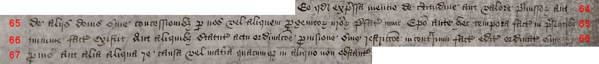
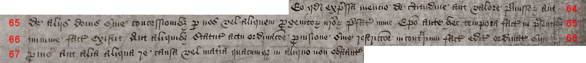

Images and transcription: Witness R
The following page includes images taken from the oldest copy consulted, the Patent Roll, which we have designated Witness R.
This has been provided principally as a palaeography exercise for those wishing to learn to read this specific type of hand, which was commonly used in the royal Chancery during this period. The text has been broken into blocks and the lines have been numbered.
The transcription here differs in several respects from the version of R used in the comparison texts. This is because they serve different purposes.
In the comparison, certain differences between R and the other copies were ignored as being semantically insignificant. We could have chosen to mark them up in our XML document but elected not to, as this would have introduced a great deal of extraneous markup (multiplying not only tedium but also opportunities for human error) and would have thrown off the computer-generated calculations of the number of variations among the texts.
Principally, these are matters of orthography (spelling conventions). Witness R continues the medieval practice of condensing all -ae- and -oe- diphthongs to a bare -e-, while all the other copies consulted and compared had "corrected" the orthography, in accordance with Classical/Renaissance Latin standards, by using -ae- and -oe-. However, the text of R as rendered below sticks to the -e- orthography used in the document, as the goal is to give a more literal transcription.
Similarly, in this hand (as in some others of the era), small -c- and -t- are often very similar in form and sometimes entirely indistinguishable, especially when found in the middle of a word, and most notably as part of a -cio- or -tio- formation. Here, according to my best reading, -cio- typically appears where -tio- would appear in a classical/Renaissance Latin spelling of the word. Therefore, when a word is so abbreviated that the whole -tio- or -cio- section is missing, I have maintained a consistent -cio- in the expansions.
The text of R does not include the more modernized punctuation used in the later copies, which we did not mark as variants in our comparison; the transcription here adheres to the punctuation (or lack thereof) found in this copy. It must be said that this makes it much more difficult to read and interpret; but this was written out by scribes who spent their days copying out the same types of documents, the same formualae of words, and thus they did not need the level of support that a reader needs to come to such a text for the first time. Similarly, this scribes abbreviations are both severe and often unhelpful. Some medieval manuscripts are much more severely abbreviated than this, but the abbreviations in them are usually part of a complex system that should leave the reader in little doubt as to the proper expansion of the abbreviation. Here the scribe shortens a great many words with something like a large apostrophe. This is very inconvenient for the reader, as the endings of the words define their grammatical function. The expansions in the transcription below owe a great deal to the other, later manuscripts: either the lost original copy was not so abbreviated, or the transcripts taken from it were made by copyists well versed in the sort of Latin used here, or both. Readers new to this hand should not be discouraged by their inability to see why one abbreviation is expanded differently from another that looks much the same.
Capitalisation is also something of a guessing game at times. We are accustomed, in a world of print and type, to a strict distinction between upper- and lower-case letters (terms that themselves arise from the printer's shop). This distinction is not so clear in many manuscripts, even long after the advent of printing. Different copies of the Brecon Letters Patent consulted in our project did not always agree on the use of majuscule (capital) letters, and as this was a scribal choice that was unlikely to help us answer our research questions, we ignored it in our markup. I have given a more literal transcription below, but caveat lector: the these represent judgment calls on the part of the transcriber, and you are free to disagree with them. In particular, the P beginning Priorat* often seems to me slightly larger than that beginning the word prior, so I rendered them as Priorat* and prior.
The first image is an index note from the left-hand margin of the roll:

Willelmo Episcopo
Meneven' de con[cessione]
sibi et successoribus.

¶ Rex omnibus ad quos et c' salutem. Cum Collegium de Alberguylly in loco inidoneo existit ubi nulla occasio hospitalitatis
2. aliis per viros dicti Collegii administrande datur ad commodum et utilitatem subditorum nostrorum in locis dicto Collegio adjacentibus
3. ad grave dampnum dictorum ligeorum nostrorum /

3. Cumque eciam domus sive Prioratus fratrum predicatorum in oppido nostro de Brechnok
4. in australibus partibus Wallie cum omnibus et omnimodis mesuagiis terris et tenementis bonis rebus necessariis et implementis ad dictum
5. nuper Prioratum spectantibus in manibus et possessione nostris iam existunt vel existere deberent pretextu doni concessionis ac sursum
6. reddicionis Ricardi Davidi nuper Prioris et Conventus eiusdem nuper Prioratus nobis inde facte virtute cujus nos in iure
7. Corone nostre Anglie de dicto nuper Prioriatu mesuagiis terris tenementis ac ceteris omnibus et singulis premissis seisiti sumus in dominico
8. nostro ut de feodo

8. Cumque eciam subditi et ligei nostri in dictis partibus australibus Wallie commorantes, summa egestate
9. oppressi filios suos in bonis literis educare non possunt et in dictis partibus australibus Wallie nullus ludus literarius habetur per
10. quod non solum et clerici et laici omnis etatis et condicionis rudes et ignari redduntur tam sui officii erga deum quam debite
11. sue obediencie erga nos sed eciam lingue vulgaris Anglie minime periti sic quod statuta nostra in huiusmodi casu
12. edita et provisa observare nequeunt / Et quod debuerunt et tenentur facere secundum formam et effectum dictorum statutorum intelligere
13. non possunt propter ignoranciam dicte lingue Anglicane

13. Cumque eciam in dicto Collegio de Alberguylly pro Cantatoribus
14. in eodem Collegio stipendia atque salaria ad summam quinquaginta trium librarum sterlingorum annuarum attingentia providentur
15. Que quidem summa quinquaginta trium librarum in meliores usus potest disponi utpote in adolescentibus et alijs juvenibus
16. in bonis literis instruendis et cotidiana lectura per aliquem virum pium et eruditum dictanda unde possunt veritatem callere et
17. quid deo et Regi faciendum foret sacius possunt intelligere in maximum commodum tocius populi nostri ibidem commoraturi sicut
18. per relacionem dilecti nobis in Christo Willielmi Episcopi Menevensis plenius ac planius accepimus/

18. Nos igitur volentes ex intima
19. charitate nostra qua erga deum et cunctum populum nostrum gerimus congruum remedium in hac parte providere et in multo meliores
20. usus quam nunc disponuntur convertere et transmutare clare percipientes quod premissa omnia et singula melius disponi possunt
21. Volentesque multum statum subditorum nostrorum melius consulere de gratia nostra speciali ac ex certa sciencia et mero motu nostris
22. dedimus concessimus et confirmavimus ac per presentes damus concedimus et confirmamus prefato Willielmo nunc Episcopo totum illum
23. domum sive Prioratum fratrum predicatorum ac totum solum et fundum precinctum et ambitum dicti nuper Prioratus ac omnia
24. edificia terras et tenementa redditus reversiones et servicia mesuagia sola funda proficua commoditates advantagia et hereditamenta
25. quecumque dicto nuper Prioratui quoquo modo spectancia sive pertinencia/
25. Aceciam omnia catalla res hustilmenta
26. necessaria et implementa in dicto nuper Prioratu tempore dissolucionis eiusdem vel unquam postea existentia vel ad eundem
27. nuper Prioratum aliqualiter spectancia vel pertinencia cuiuscumque generis vel speciei fuerint ac in tam amplis modo et
28. forma prout dictus Ricardus David ultimus Prior dicti
nuper domus fratrum predicatorum vel aliquis prædecessorum predicti Ricardi
29. David nuper Prioris eiusdem nuper domus sive Prioratus dicti nuper Priorat' terras et tenementa solum fundum edificia ac
30. cetera hereditamenta qucumque bona et catalla res hustilmenta implementa et necessaria dicti
nuper Prioratui
spectancia
31. vel aliquo modo pertinencia ac reversionem dicti nuper Prioratus et ceterorum premissorum quorumcumque/
31. Aceciam dedimus et
32. concessimus et de gratia nostra speciali certa sciencia et mero motu nostris damus et concedimus eidem nunc Episcopo et successoribus
33. suis totum ius nostrum statum titulum clameum possessionem interesse et demand' que nos in predicto nuper Prioratu sive
34. domo fratrum predicatorum ac ceteris premissis cum pertinenciis ac in reversione dicti nuper Prioratus sive domus fratrum predicatorum
35. ac ceterorum premissorum cum omnibus et singulis suis pertinenciis universis ac in manibus et possessione nostris iam existentibus habemus seu
36. quovismodo infuturum habere poterimus aut heredes vel successores nostri habere aut clamare debent aut poterunt
37. quovismodo infuturum iure titulo materia vel causa quibuscumque iuxta omnem iuris effectum ac omnia et omnimodas libertates
38. et franchesias iura et iurisdictiones quecumque dicto nuper Prioratui terris et tenementis vel ceteris hereditamentis quibuscumque

39. sive alicui inde parcelle quoquo modo spectancia vel pertinencia adeo plene et integre prout antedictus Ricardus David nuper Prior
40. Prioratus predicti aut aliquis predecessorum suorum Priorum dicti nuper Prioratus sive domus predicatorum in iure illius Prioratus
41. dict'
nuper domum sive Prioratum fratrum predicatorum ea vel predicta bona et catalla res necessaria vel implementa predicta vel
42. aliquam partem inde unquam habuerunt tenuerunt vel gavisi fuerunt habuit tenuit aut gavisus fuit aut habere tenere seu
43. gaudere debuerunt vel deberent debuit sive deberet aut adeo plene et integre prout ea omnia et singula ad manus
44. nostras racione et pretextu dissolucionis dicti nuper Prioratus sive domus devenerunt seu devenire debuerunt vel deberent
45. ac alio modo quocumque in manibus nostris jam existunt seu existere debent vel deberent/

45. habendum tenendum et gaudendum
46. predictam domum sive predictum nuper Prioratum solum fundum et precinctum ejusdem ac omnia et singula edificia dicti nuper Prioratus
47. ac omnia mesuagia terras et tenementa redditus reversiones et servicia commoditates et proficua ac cetera hereditamenta quecumque bona
48. catalla res hustillamenta implementa et necessaria quecumque ac cetera omnia et singula premissa superius expressa et specificata
49. cum suis iuribus et pertinenciis universis unacum omnibus et omnimodis proficuis emolumentis et commoditatibus quibuscumque ad dictum nuper
50. Prioratum spectantibus vel pertinentibus prefato Willielmo nunc Episcopo Meneven' et successoribus suis imperpetuum tenendum de nobis
51. heredibus et successoribus nostris per fidelitatem tantum pro omni servicio et exactione quacumque
 
